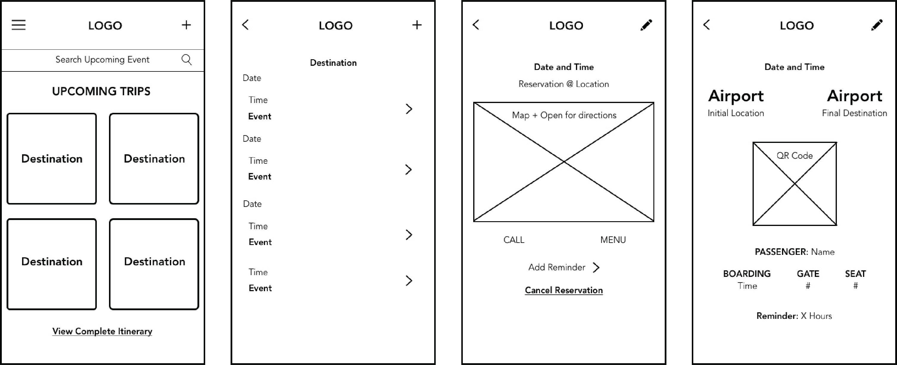
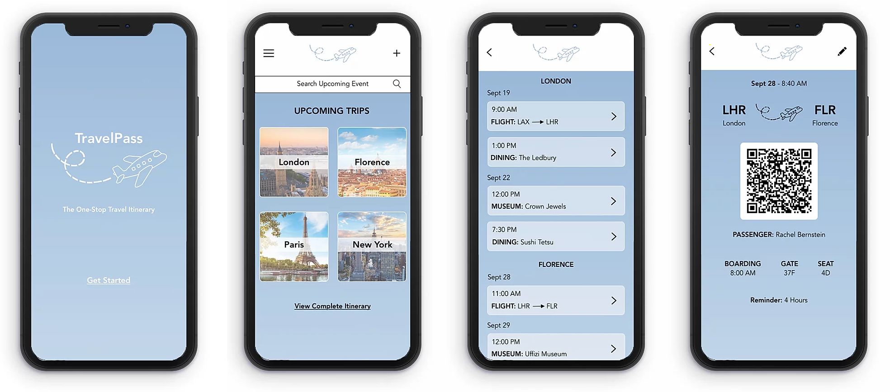

TravelPass Mobile App
Sept - Oct 2019
For my Digital Product Design course, I was tasked with designing an app that would address a problem in the realm of travel. I chose to design an app that compiles all necessary travel passes and reservations including hotel bookings, boarding passes, train tickets, museum passes, dinner reservations and more.

Problem Statement
When traveling, especially for long periods of time, it can become incredibly difficult to remain organized. It's easy to misplace a boarding pass or dinner reservation among the swarm of emails that travelers receive daily. There is no app that compiles all necessary travel information in one place.
Design Process
I began my design process by conducting user research and developing a primary persona from these findings. Following the development of this persona, I designed an empathy map and began producing low-fidelity wireframes. I turned the wireframes into a high-fidelity working prototype and conducted usability testing. My goal in designing this app was to allow users to stay organized while traveling.
Target Market
Broadly, the audience of TravelPass is anyone who engages in travel; however, a more specific audience that is targeted is study abroad students and young adults ages 18-27. Study abroad students and young adults need help organizing materials for each of their trips because, as many are traveling on their own for the first time, it can be an overwhelming experience keeping track of a number of trips at once. TravelPass will help them reduce travel anxiety through organization.
Primary Persona
Rachel Bernstein
Age: 21, Profession: Student
Rachel is a first semester junior at the University of Michigan preparing for her semester abroad in Florence, Italy. She has traveled throughout Europe with her friends but frequently finds herself stressed about keeping all of her important paperwork together. She wishes she didn't have to search all over her phone through different apps and emails for every confirmation, reservation, and activity booking. Rachel loves exploring new cities and finding restaurants and activities to make each place unique.
Wireframes
Following my user research and persona development, I designed low-fidelity wireframes for the main screens of my app. Above from left to right are the home page featuring all upcoming trips, an example of a specific trip itinerary, a dinner reservation screen, and a flight ticket.
Prototype
I turned my wireframes into a digital prototype and altered my designs based on feedback and usability testing. I implemented a favorites section and previous trips page to allow users to save activities and restaurants to easily share with friends and family following their trips.
Follow the link below for the working prototype of the app:
TravelPass Prototype